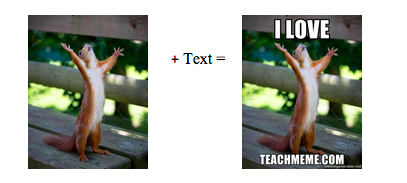

Meet the Creators
Ashley Weber is a certified teacher in the areas of Spanish, English as a Second Language, English, and Library Science. She has taught at the high school and college levels in both urban and rural contexts. As a teacher, she used to spend countless hours searching the Internet for funny resources that would keep her students engaged and that reflected the content she was teaching, but Ashley frustratingly found that most websites’ search terms aren’t purposed for teachers. As a PhD student in Second Language Acquisition at Carnegie Mellon University in Pittsburgh, she decided to develop TeachMeme.com as a way for fellow educators to easily find visual resources for their lessons. She truly believes in the power of collaboration between teachers and hopes that they find TeachMeme.com a useful space to share their humorous resources with one another.
Mansur Suleman is a software engineer with an extensive project management and software development experience in various IT projects. One of the examples of his projects is Everloop a social network for kids. Mansur has participated in the development of a data migration tool in Microsoft corporation. Mansur won a scholarship from Innopolis University (Russia) to study in a one-year master program in Software Engineering at Carnegie Mellon University. He decided to apply in order to perfect his knowledge in software engineering. Mansur met Ashley on a connect event in the university and was inspired her idea of using memes for teaching languages. Both decided to create the memes tool that would benefit both students and teachers.
Internet memes, popular among technology-savvy youth, are a useful tool for representing an educational concept in a funny, concise, and visual manner. Memes are most often humorous images with large block-lettered white text above and/or below the picture. They are frequently copied and altered by Internet users and then spread rapidly throughout digital subcultures, making the images well-known. Sometimes the humor of a meme centers on a pop culture reference or current event. TeachMeme.com includes cartoons and other types of visual humor in addition to memes.
How can memes help teachers?
How memes changed my teaching life
“Like many new teachers, during my first few years of teaching I struggled with classroom management. One cause of the problem was most likely that my students were not fully engaged. I realized that I was also somewhat bored by my own lessons. To liven things up, I searched online for funny captioned photos (memes) and cartoons that I could use in my PowerPoint presentations. After going over a Spanish grammar lesson, I would show a meme or cartoon that reflected the content I just taught. I noticed that students perked up and laughed at the joke, which served as a formative assessment for me to gauge whether or not they understood the grammar concept. Memes became useful as bellringers to refresh students’ memories of the previous lesson and communicative opportunities to ask and answer questions about a funny photo. Now I use them constantly to pepper my lessons with humor.”
– Ashley Weber, Co-Founder of TeachMeme.com
TeachMeme.com serves two functions:
Memes represent grammar or vocabulary concepts effectively, which is a helpful tool for foreign language teachers. For instance, a photo of the popular meme Grumpy Cat with the Spanish caption "Gato Enojado” can be used to exemplify adjective-noun agreement. Previously, a website did not exist that allowed a search of educational keywords like “Spanish adjective agreement.” Teachers had to search general meme websites, which oftentimes contain inappropriate content for children, filtering through many unrelated memes. TeachMeme.com now offers Spanish teachers a searchable database of child-appropriate memes that represent vocabulary and grammar concepts, tagged with keywords for the educational content that they reflect.

The site offers a meme generator, so users can choose from a stockpile of popular meme images or can upload their own image and add text. Teachers can ask students to make memes for assignments, or teachers can make their own as posters in the classroom.
Find existing memes
Visitors can browse the existing database of memes by searching for keywords that relate to Spanish grammar content such as “imperfect verbs” or vocabulary such as “food.” When visitors find memes they like, they can save them to their computers or to an album within the website. Users can rate the memes and search by “highest rated.”
Make your own memes
The website promotes open sharing of resources, so users will be encouraged to create their own memes and post them for other educators to use. When visitors to the website make their own memes, they must create a username and password. Then, they can choose to save the memes to a private album, or they can submit them to appear in the public website database for anyone to see.
When users save the memes to a private album:
When users submit the memes to the public database: